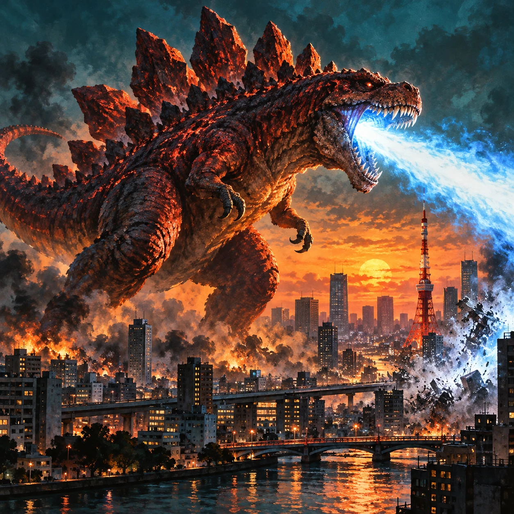
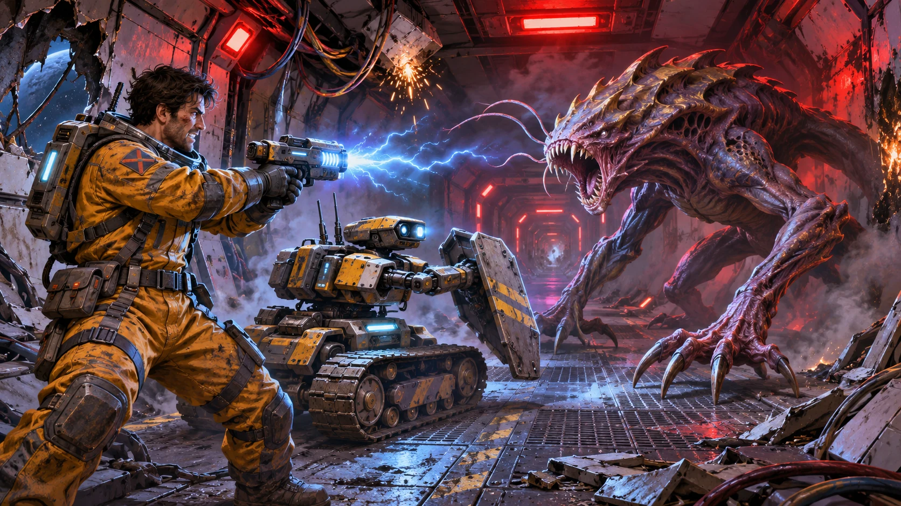

TWO WORLDS. ONE GAME ROOM.
Choose your
kind of chaos.
Raze a city. Rescue a starship.
Two very different survival plans.

01 BREAKFAST IN TOKYOKAIJU STRATEGY · CITY DESTRUCTION
Breakfast
in Tokyo.
Become the monster. Tear through the city, face rival kaiju, and evolve into something worse.

02 PANDORA · SURVIVE THE WRECKSCI-FI SURVIVAL · CREW & BOTS
PandoraSurvive the Wreck
Five crew. Seven bots. A ship full of escaped specimens. Restore the systems and survive the wreck.
One city to destroy. One ship to save.Your next move is up to you.
BACK TO TOP ↑